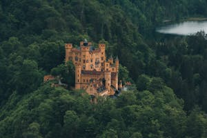

A Alemanha encanta com suas paisagens de tirar o fôlego, onde florestas densas, montanhas majestosas e campos verdejantes se entrelaçam em uma beleza serena. Castelos antigos, com suas paredes de pedra e torres imponentes, surgem como guardiões da história, encravados em colinas e às margens de rios. A atmosfera medieval parece pairar no ar, enquanto as construções, com suas fachadas imponentes e elegantes, evocam um passado repleto de lendas e mistérios. Cada paisagem e castelo na Alemanha conta uma história única, convidando o visitante a uma viagem no tempo.
Castelo completamente cercado de árvores.
Torre do castelo com uma árvore na frente.
Castelo branco mais famoso da Alemanha cercado de arvores.